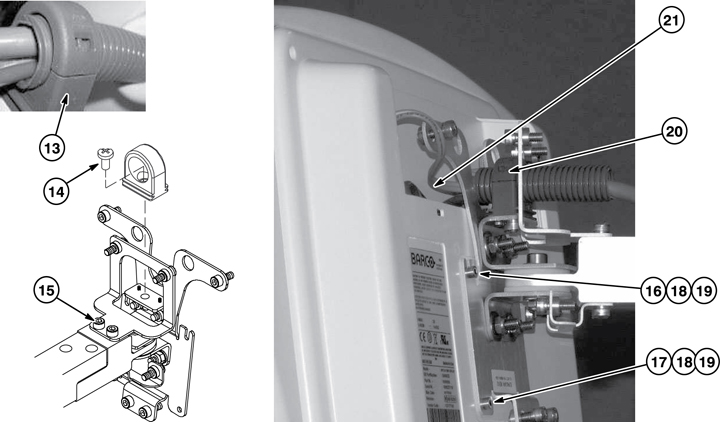

In Room Display Monitor Installation
This is the installation procedure for installing the cables, brackets, and In Room Display (IRD) Monitor for the system.
Figure 1. Installing Brackets and Cables

-
Attach the Cable Tie Mount Base (P/N 46-208746P9) to the plate with the M4 X 10 screw (P/N 2109873-14).
-
Ensure the air sensor bracket is attached to the plate.
-
Attach Run M3366 to the arm with one M6 X 25 hex socket-head cap screw (P/N 2109867-15), but do not tighten at this time.
-
Route the ground wire and fiber-optic cable adjacent to the main cable, one on each side. Do not tie wrap either one to the tie mount; both are to remain free sliding.
-
Slide the tie-wrap through the mount to hold the cable in place, but do not tighten.
-
Route the fiber-optic cable to the top of the magnet, and connect to J28 on the fiber-optic I/O board.
-
Connect the Monitor Cable Assembly ground wire to the front ground stud using one brass M10 x 16 screw nut and one M10 stainless steel washer (P/N 2109878-4).
-
Locate the IRD Pivot Assembly (P/N 5394815).
-
Attach the IRD Pivot Assembly to the IRD mounting plate using two M6 X 40 hex socket-head cap screws (P/N 1000-M6C040-31) and M6 hex nuts (P/N 3002-M6C-31).
-
Route the cable labeled MAG-Track Ball 1 to the left side at the front of the magnet.
-
Route the cable labeled MAG-Track Ball 2 to the right side at the front of the magnet
-
Route the cable labeled MAG-J2 to the top of the magnet, and connect to J2 on the magnet I/O board.
Figure 2. Installing IRD Monitor

-
Remove the cable clamp from Run M3366 cable assembly, and insert a small screwdriver into the side of the clamp labeled Open until the clamp releases.
-
Attach the cable clamp to the Pivot Assembly with the M6 X 12 screw (P/N 2109873-24).
-
Locate the IRD monitor. Loosen, but do not remove, the top two screws on the back of the monitor.
-
Remove the two bottom screws on the back of the monitor, and position the monitor on IRD monitor mounting plate.
-
Apply Loctite® 242 to the mounting screws.
-
Fasten the two bottom screws and tighten the two top screws to secure the monitor to the mounting plate with a hex wrench No. 3.
-
Secure the cable assembly into the cable clamp on top of the bracket, and close the clamp to secure the cable.
-
Connect the three Run M3366 cables (Ground, Fiber-optic and Power) to the back of the monitor.